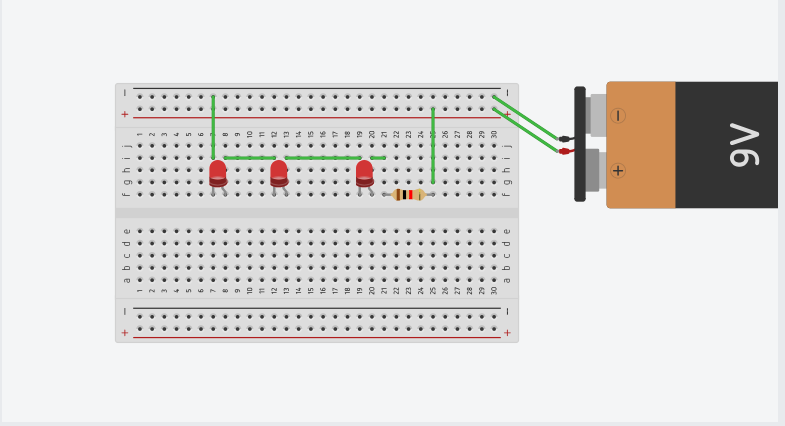

Engineering Project


10/30/23-11/3/23 Week 11 This week we were introduced to Electrical Engineering. We learned about circuits, resistors, diodes, anodes and cathods and what they each are or do. We also had to complete two labs on tinkercad to demonstrate a parallel circuit or a series circuit. With a parallel circuit, our task was to place LEDS parallel to each other and make the circuit work. A series circuit on the other hand, we had to put the LEDS right next to each other consecutively. I enjoyed doing this because it was like a puzzle that I had to figure out. 